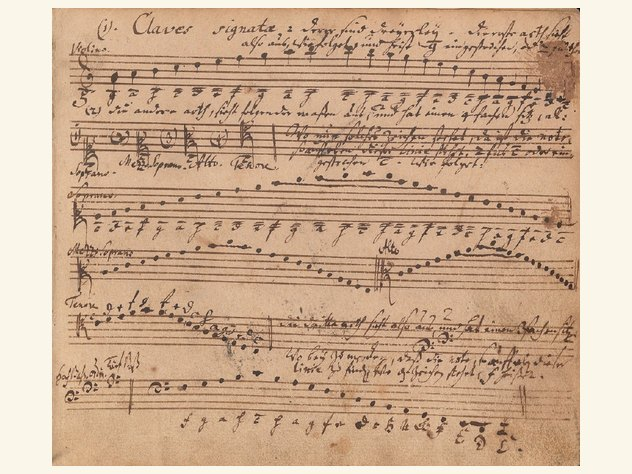
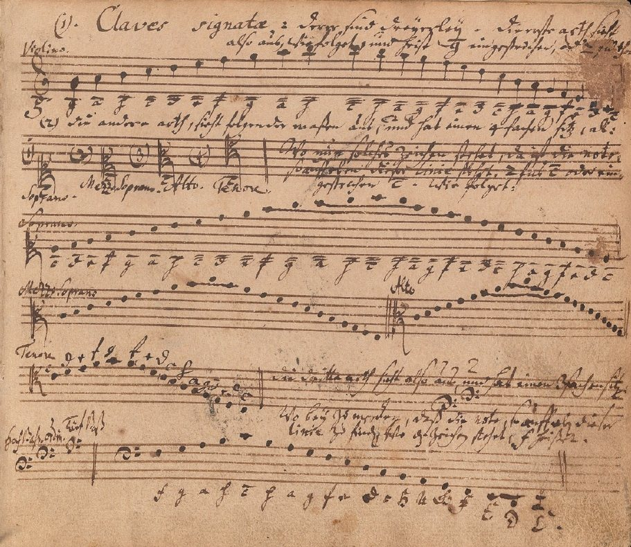
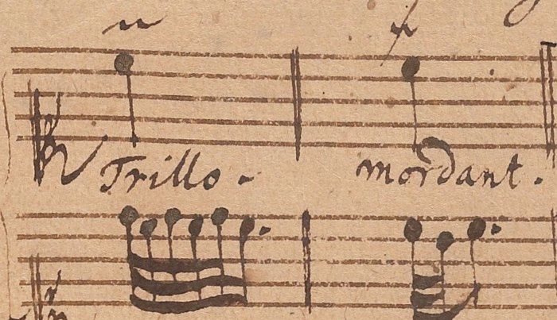

Comparing Fractions, Part 1
MA.3.FR.2.2 Identify equivalent fractions and explain why they are equivalent.
Today stretches toward Grade 4: renaming fractions to compare them. Dimensions Math 3B, Chapter 10, Lesson 4 · Comparing Fractions, Part 1

Leipzig, Germany · about 300 years ago

How can you compare fractions when the pieces are different sizes?
Cut each sixth into 2. Now both bars are cut into twelfths, so you can count: 2 twelfths and 5 twelfths.
You will…
- Re-cut one bar so both bars have pieces of the same size.
- Multiply the numerator and the denominator by the same number.
- Compare the fractions with <, > or =.
Why Bach?
Real pages from the music book Bach started for his oldest son, Wilhelm Friedemann, in January 1720. Friedemann was nine. On the first page, Bach wrote the name of every note in small letters under it, so his son could learn to read music. On another page, Bach showed what the little squiggles over some notes mean.


Some short pieces in the book have two parts: one for the right hand and one for the left. In 1723, Bach wrote them out neatly and called them Inventions. Then he moved to Leipzig.
Today's math: two hands share one measure. If their notes are cut into pieces of different sizes, you can't just count. Re-cut so the pieces match. Then count and compare.
Today you'll multiply by small numbers a lot. Type each answer, then check. You can fix any answer and check again.
Same-size pieces
Two bars, the same length, both cut into twelfths. The top bar has 5 tiles shaded. The bottom bar has 7 tiles shaded.
Think: Too Close to Tell
🔨 Do · ✏️ WriteHere is a practice measure like one Friedemann might have played. The right hand holds one note for four-fifths of the measure. The left hand holds one note for seven-tenths.
The navy bar is one whole measure. Under it are the two hands' notes as fraction tiles. The right hand's bar is cut into fifths. The left hand's bar is cut into tenths. A gold line shows where each note stops.
Re-cut the right hand's bar
Press ✂ Cut each fifth into 2.
Name it in tenths
Compare
Drag <, > or = into the box between four-fifths and seven-tenths.
Did the note get longer?
Cut each fifth into 2, and fifths become tenths. The numerator and the denominator are both multiplied by 2. The note is the same length, so now you can count.
Re-cut so the pieces are the same size. Then compare.
- Look at the pieces. Fifths and tenths are different sizes, so counting them would not be fair.
- Re-cut one bar. Cut each fifth into 2. Multiply the numerator and the denominator by the same number: 4 × 2 = 8 and 5 × 2 = 10.
- Count and compare. Now both fractions have a common denominator. 8 tenths is more than 7 tenths, so four-fifths is greater than seven-tenths.
- Another way. Sometimes it is easier to make a common numerator. One-sixth = two-twelfths. Two-elevenths and two-twelfths both have 2 pieces, and an eleventh is bigger than a twelfth. So two-elevenths is greater.
Four ways to see four-fifths and seven-tenths
Your Turn: Eighths and Sixteenths
🔨 DoIn another practice measure, the right hand holds a note for seven-eighths. The left hand holds a note for thirteen-sixteenths. Which note is longer?
One measure and the two hands' notes as fraction tiles: eighths on top, sixteenths below. Under them is a box for a symbol.
Re-cut the eighths
Press ✂ Cut each eighth into 2.
Multiply both numbers by 2
Compare
Drag <, > or = into the box between seven-eighths and thirteen-sixteenths.
Juno Counts Different Pieces
🔨 Do · ✏️ WriteJuno compares two notes. One lasts seventeen-twentieths of a measure. The other lasts nine-tenths. Juno says, "Seventeen-twentieths is longer, because 17 is more than 9."
One measure and Juno's two notes as fraction tiles: twentieths on top, tenths below. Juno's symbol is already in the box.
Re-cut the tenths
Press ✂ Cut each tenth into 2.
Name it in twentieths
Fix Juno's symbol
Drag the right symbol into the box over Juno's.
Help Juno
Kai Picks the Bigger Denominator
🔨 Do · ✏️ WriteKai compares three-twentieths and one-fifth. Kai says, "Three-twentieths is more, because 20 is bigger than 5."
One measure and Kai's two fractions as fraction tiles: twentieths on top, fifths below. Kai's symbol is already in the box.
Re-cut the fifths to match
Press a ✂ button. Pick the cut that makes the fifths into twentieths.
Name it in twentieths
Fix Kai's symbol
Drag the right symbol into the box over Kai's.
Help Kai
Leo Re-cuts Only the Denominator
🔨 Do · ✏️ WriteLeo compares eleven-twentieths and four-fifths. He changed four-fifths into four-twentieths. He multiplied the denominator by 4, but not the numerator. Then he said eleven-twentieths is greater.
First, two bars to check Leo's new name: fifths and twentieths. Then the two fractions Leo wanted to compare, and a box for a symbol.
Shade four-fifths
Tap the 4th tile in the fifths bar.
Shade Leo's four-twentieths
Tap the 4th tile in the twentieths bar.
Is it the same amount?
Re-cut the right way
Press ✂ Cut each fifth into 4.
Fix Leo's fraction
Fix Leo's symbol
Drag the right symbol into the box over Leo's.
Help Leo
Which Note Is Longer?
🔨 Do · ✏️ WriteIn one measure, the right hand holds a note for seven-tenths. The left hand holds a note for thirteen-twentieths. Which note is longer?
One measure and the two notes as fraction tiles: tenths on top, twentieths below. Under them is a box for a symbol.
Re-cut the tenths
Press a ✂ button. Pick the cut that makes the tenths into twentieths.
Name it
Compare
Drag <, > or = into the box between seven-tenths and thirteen-twentieths.
Tell how you know
The Duet
🔨 Do · ✏️ WriteIn an Invention, both hands play at the same time. Here, the right hand holds a note for nine-tenths of the measure. The left hand holds a note for thirteen-twentieths. Listen first. Then prove what you heard.
One measure and the two hands' notes as fraction tiles: tenths on top, twentieths below. Play makes both notes sound together, with a gold line moving across the measure.
Problem 1 · Listen
Press ▶ Play both parts. Listen to the end of each note.
Problem 1 · What did you hear?
Problem 2 · Re-cut the tenths
Press ✂ Cut each tenth into 2.
Problem 2 · Name it
Problem 2 · Compare
Drag <, > or = into the box between nine-tenths and thirteen-twentieths.
Problem 2 · Listen to the pieces
Press ▶ Play both parts again. Now every shaded piece is one quick tap.
Problem 2 · Tell why
Prove It
✏️ WriteProblem 3 · Prove It
Three Notes in Order
Put three-tenths, one-fifth and seven-twentieths in order from least to greatest. Re-cut them all into twentieths first.
Turn in your work
- Check the list below. Jobs 1 to 8 are required. The Bonus is optional.
- Press 📋 Gather my answers, then 📋 Copy. Or press 🖨️ Print or save as PDF.
- Open this lesson's assignment in Canvas.
- Paste your answers (or upload your PDF and journal photo), then press Submit.
All my answers
Your answers and your work on this page save on this device as you go.
Before you turn in
- I finished Jobs 1 to 8.
- I drew ×2 or ×4 arrows on both the numerator and the denominator in my math journal.
- I re-cut before I compared.
- I tried the Bonus. (optional)
Lesson 3.10.05 · Comparing Fractions, Part 2
Today you re-cut fractions to compare them. Next, you'll compare fractions to one-half and to one whole.
Bach · Invention No. 1 in C major
Two parts, one for each hand. Played here from Bach's music with a harpsichord sound. About 1¼ minutes.
Johann Sebastian Bach, Invention No. 1 in C major, BWV 772. Played with a harpsichord sound made for this page from the Mutopia Project MIDI file (public domain, via Wikimedia Commons).